Zurali.
Delicadeza como força.
Equilíbrio como expressão.
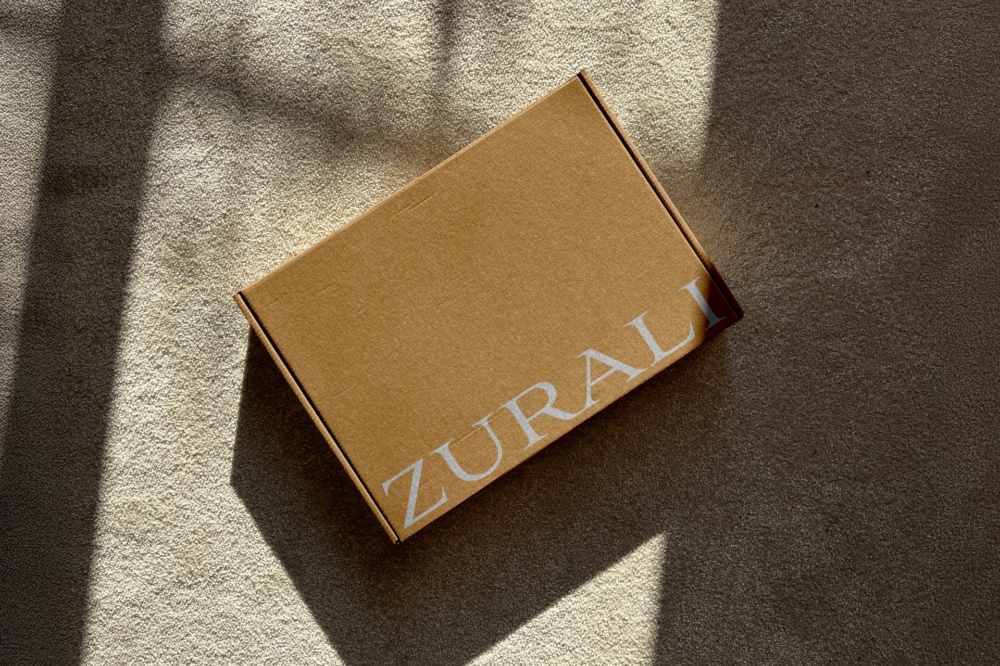
Uma marca para vestir
o próprio ritmo.
A Zurali é uma marca de moda feminina nascida no digital. Sua curadoria reúne peças que aproximam conforto, versatilidade e elegância para acompanhar a rotina real de suas clientes.
O projeto partiu desse encontro entre delicadeza e segurança. Criamos o nome e a identidade visual para dar expressão a uma marca que acolhe a individualidade da mulher e entende a leveza como uma forma de presença.
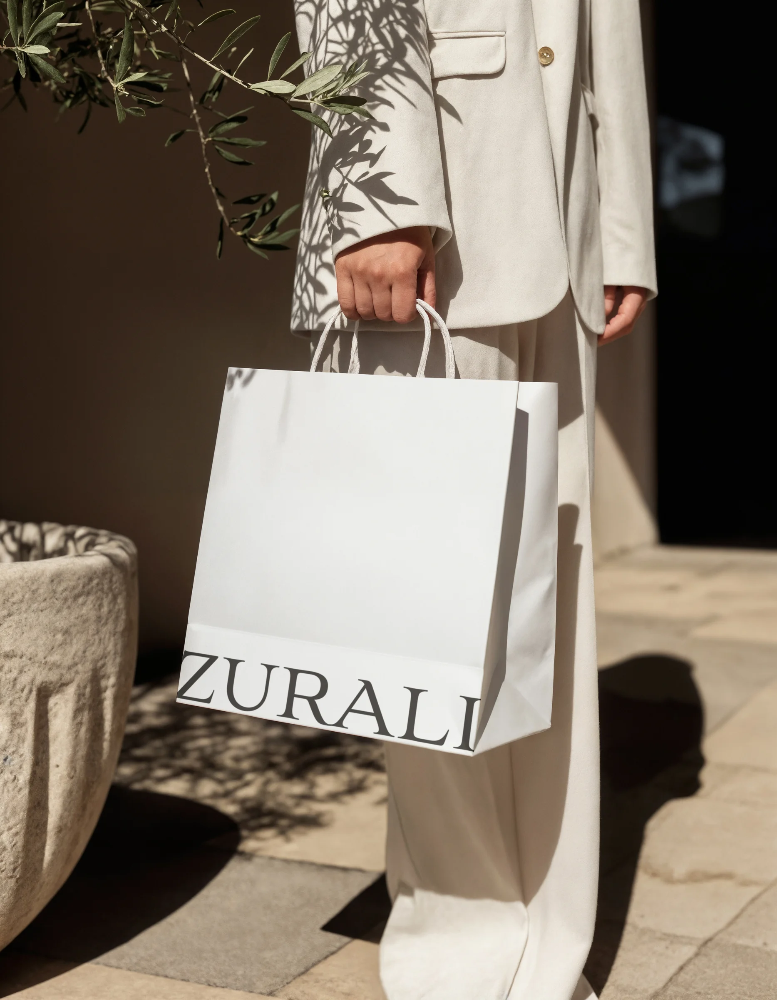
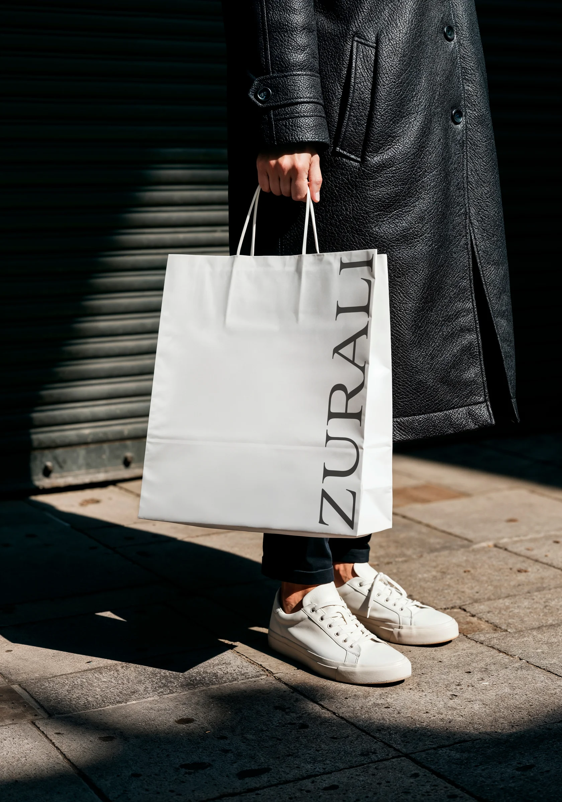
Uma história que começa
pelo nome.
Zurali foi o nome criado pela Revee para essa nova marca de moda. Nome e identidade visual foram desenvolvidos no mesmo projeto, conectados à proposta de uma feminilidade natural, segura e sem excessos.
A assinatura verbal ganha expressão em um sistema visual que acompanha diferentes formatos, do nome por extenso às composições mais compactas.
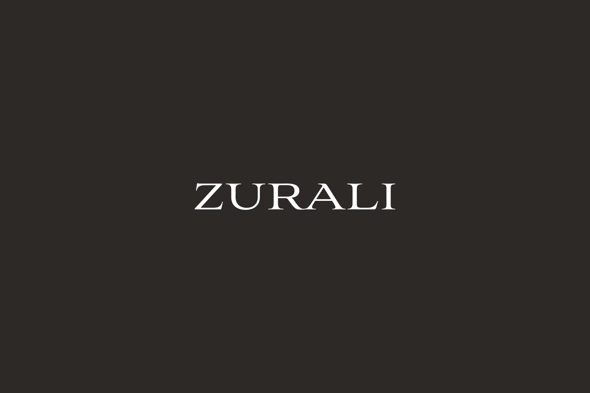
A delicadeza também
tem presença.
O equilíbrio orienta a marca: entre estética e conforto, suavidade e firmeza, beleza e funcionalidade. Essa ideia conduz uma expressão visual contida, que valoriza os espaços, as proporções e a clareza.
Tons neutros, contrastes suaves e referências de materiais naturais aproximam a identidade de uma elegância cotidiana. A marca encontra personalidade em escolhas que convivem com as roupas e com as mulheres que as vestem.
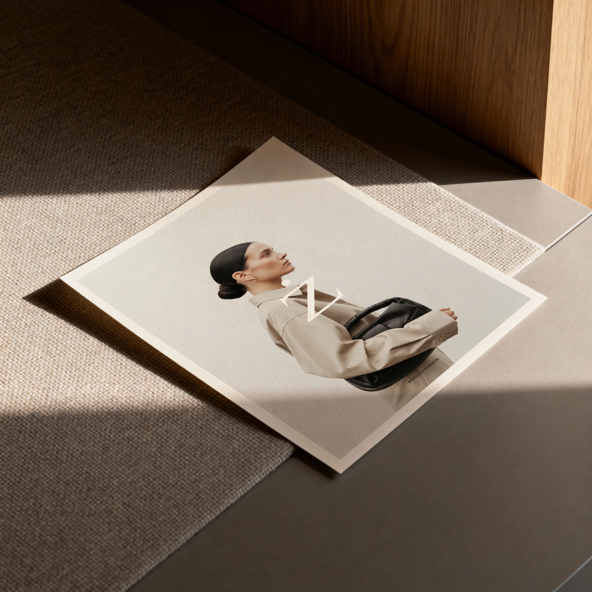
Letras que equilibram
suavidade e estrutura.
O logotipo parte de uma tipografia serifada, com formas definidas e proporções equilibradas. As serifas trazem um caráter clássico, enquanto o desenho limpo e o espaçamento entre as letras mantêm a assinatura leve.
A versão horizontal, a composição em duas linhas e os arranjos gráficos do nome ampliam as possibilidades de uso. O conjunto preserva a mesma personalidade em diferentes escalas e superfícies.
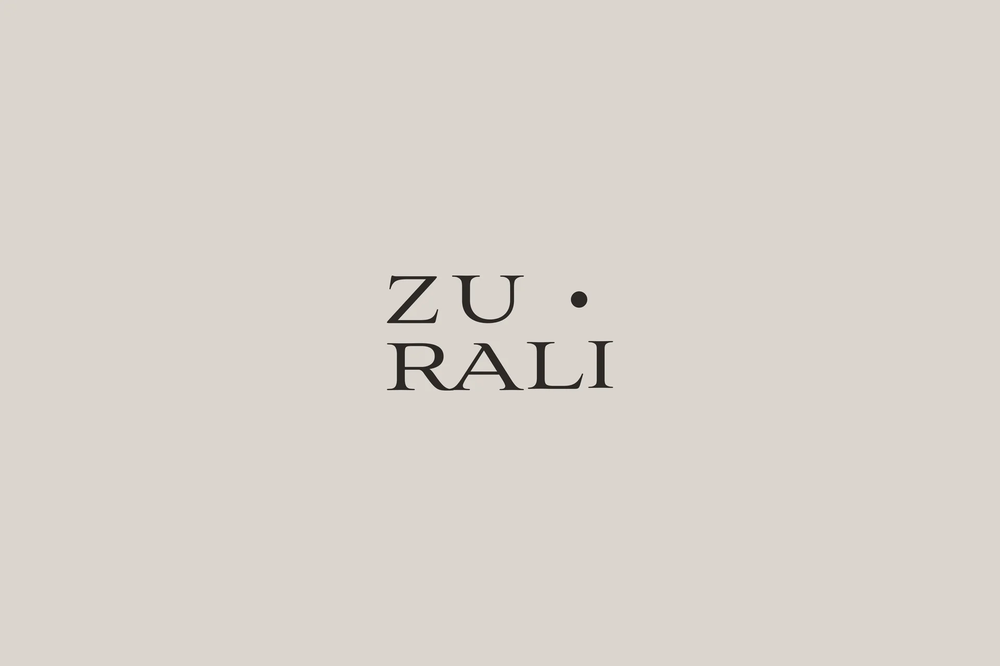
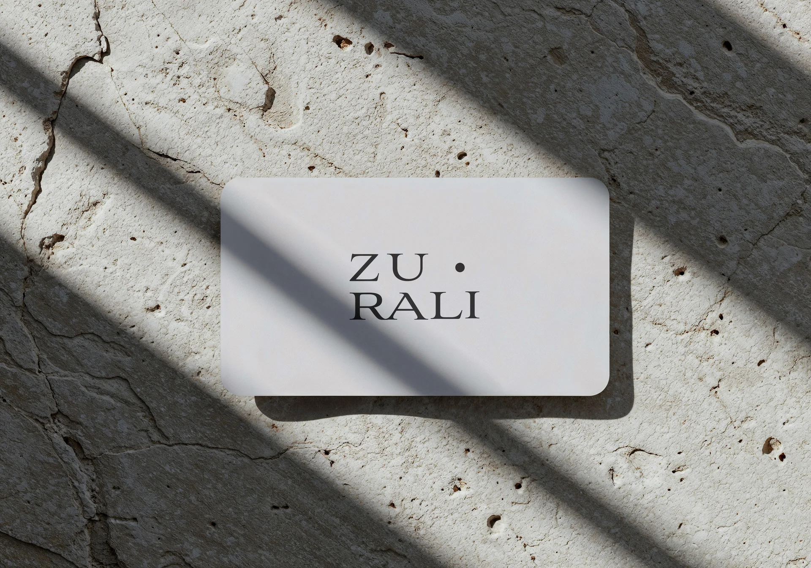
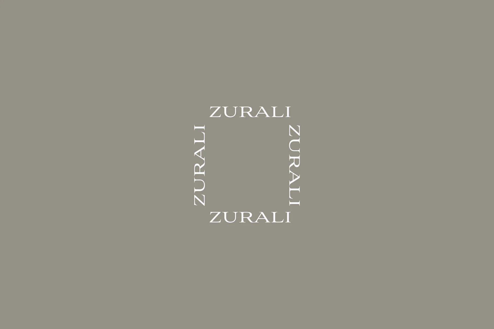
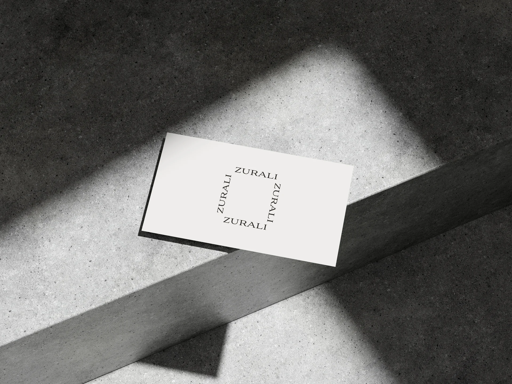
Do primeiro contato
aos pequenos detalhes.
Sacolas, etiquetas e imagens de campanha mostram como a identidade pode acompanhar a experiência da marca. O nome aparece em diferentes proporções e posições, mantendo a unidade entre as aplicações.
Os mockups apresentam esse universo visual em situações de uso: papel, tecidos, luz e textura dão contexto à criação. Uma identidade pensada para expressar cuidado, proximidade e elegância natural.
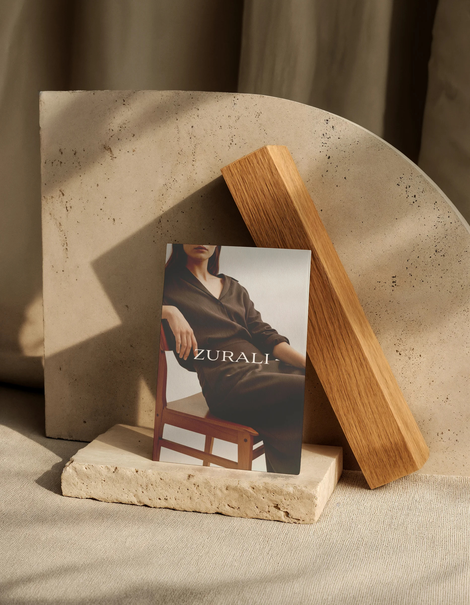
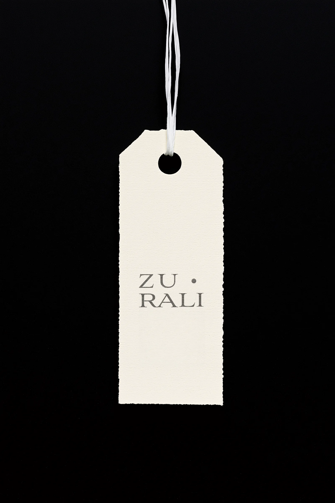